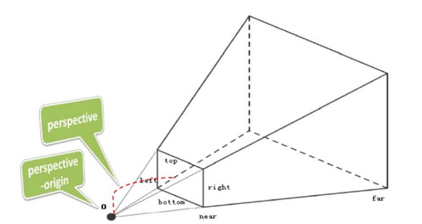
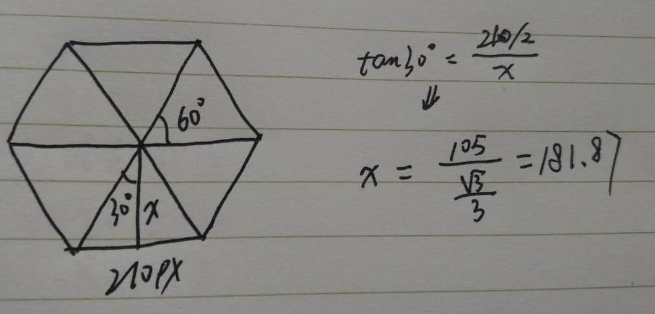

3D坐标系
- transform: rotateX(40deg) 沿X 坐标轴旋转40度
- transform: rotateY(40deg) 沿Y 坐标轴旋转40度
- transform: rotateZ(40deg) 沿Z 坐标轴旋转40度
- transform: translateX(-40px) 在 X 坐标轴负向移动 40px
- transform: translateY(40px) 在 Y 坐标轴正向移动 40px
- transform: translateZ(40px) 在 Z 坐标轴正向移动 40px
- transform: translateZ(-40px) 在 Z 坐标轴负向移动 40px

发现旋转和 Z 轴的偏移没有3D的效果，因为没有添加“透视”perspective;在CSS3动画中已经提及；

|
|
3D立方体
3D 轮播
|
|
|
|

旋转、移动图片1234567891011121314151617181920212223242526272829#carousel figure:nth-child(1) { background: yellow; transform: rotateY( 0deg) translateZ( 182px);}#carousel figure:nth-child(2) { background: red; transform: rotateY( 60deg) translateZ( 182px);}#carousel figure:nth-child(3) { background: purple; transform: rotateY( 120deg) translateZ( 182px);}#carousel figure:nth-child(4) { background: blue; transform: rotateY( 180deg) translateZ( 182px);}#carousel figure:nth-child(5) { background: pink; transform: rotateY( 240deg) translateZ( 182px);}#carousel figure:nth-child(6) { background: green; transform: rotateY( 300deg) translateZ( 182px);}